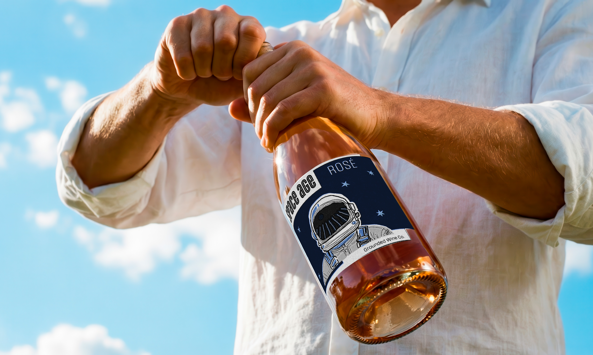

Research Image 1 placeholder
Add moodboard, reference, or research imagery here.
Case Study · Design · 2025
This project redesigns the label for Space Age Rosé by Grounded Wine Co., reinterpreting the brand through a more expressive and concept driven visual system. The original packaging was harder to understand conceptually and looked too serious, so the redesign shifts the focus toward exploration and possibility.



Brief
This project redesigns the label for Space Age Rosé by Grounded Wine Co., reinterpreting the brand through a more expressive and concept driven visual system. The original packaging was harder to understand conceptually and looked too serious, so the redesign shifts the focus toward exploration and possibility.
Research
Add moodboard, reference, or research imagery here.
Add a second reference image or comparative source here.
Sketches
Add thumbnail sketches or early composition studies here.
Add rough layout or variation studies here.
Add another early iteration or refinement here.
Concept
Add one key concept image or process frame here.
Details
Add an application, mockup, or detail image here.
Add a supporting square application image here.
Add a supporting square application image here.
Add a supporting square application image here.
Add a supporting square application image here.
The concept frames wine as an act of discovery. A hand drawn astronaut serves as the central motif, with a vineyard reflected in the visor, bridging earth and space, tradition and innovation. This juxtaposition positions the product as both grounded and forward thinking, transforming the label into a narrative moment rather than a static graphic.
The visual language draws from mid century illustration and retro futurist aesthetics, using simplified forms and expressive linework to create an optimistic, imaginative tone.
A limited blue spot color palette, deep mid century blue paired with a lighter blue gray alongside black and white, creates contrast while maintaining cohesion and print efficiency.
Hierarchy is structured to guide the viewer from the astronaut illustration, to the vineyard reflection, and finally to the typographic information. The Cyclone typeface echoes the line quality of the illustration, reinforcing cohesion between image and type while maintaining clarity.
The final label transforms Space Age Rosé into a more conceptually engaging and visually memorable product. By emphasizing illustration, narrative, and controlled hierarchy, the design captures the spirit of the space age, optimistic, exploratory, and imaginative.
The system remains functional and legible in a retail context while giving the brand a clearer identity for a younger audience. It balances personality and clarity, allowing the packaging to read as both expressive and commercially effective.